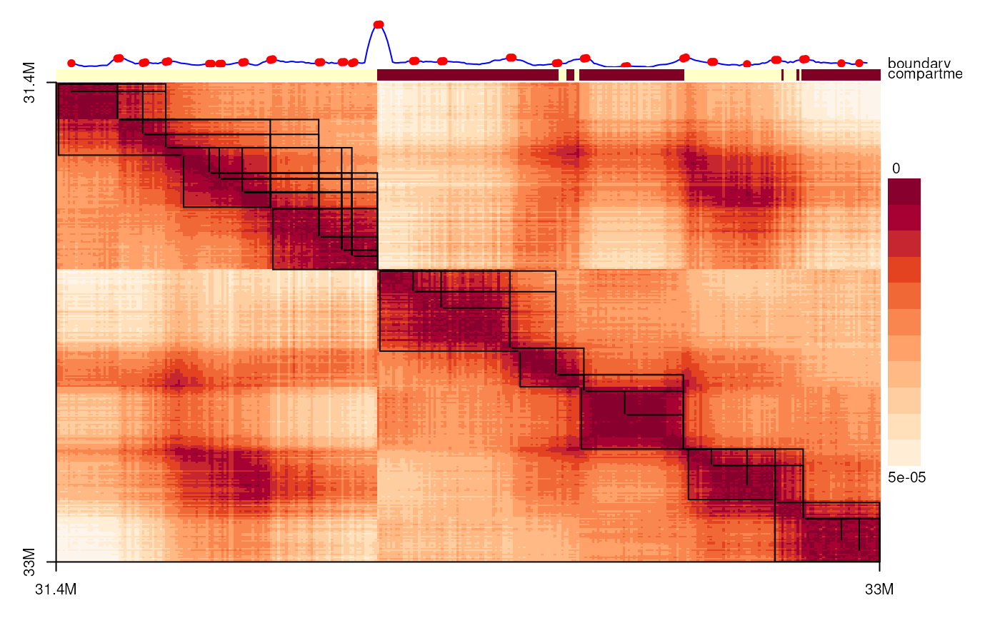

Create the spatial distance matrix for given 3D coordinates.
boundaryScore calculate the boundary score for a distance matrix. Please note that, this boundary score is the reverse of insulation score because we are using the distance matrix but not the interaction matrix.
boundaryScoreTAD assign the TAD boundaries via boundary score.
hierarchicalClusteringTAD assign the TAD boundaries via hierarchical clustering.
compartment calculate the compartment by principal component analysis.
spatialDistanceHeatmap will use base R to plot the spatial distance matrix.
spatialDistanceMatrix(xyz, output = "matrix", fill_NA = FALSE, ...)
boundaryScore(spatialDistances, window = 5, background = 10, ...)
boundaryScoreTAD(
spatialDistances,
bin_size,
window = 5,
Z_cutoff = 2.3,
norm = FALSE,
boundaryScores,
...
)
hierarchicalClusteringTAD(spatialDistances, bin_size, window = 5, k, ...)
compartment(xyz.gr, genome, minWidth = 1)
spatialDistanceHeatmap(
spatialDistances,
components = c("compartment", "boundaryScoreTAD", "hierarchicalClusteringTAD"),
col = hcl.colors(n = 12, "OrRd"),
at = seq(0, 1, length.out = 2),
label_unit = "M",
window = 5,
background = 10,
d_cutoff = Inf,
Z_cutoff = 2.3,
norm = FALSE,
Gaussian_blur = FALSE,
useRaster = FALSE,
...
)A GRanges object with x, y, z coordinates
"matrix" or "dist".
Fill the missing value or not.
Parameters could be used by downstream function.
The output of spatialDistanceMatrix or the input of spatialDistanceMatrix.
The window size for boundary score.
The background window size for local background.
The bin size.
The Z_cutoff value for boundary.
Normalize the boundary score or not.
The output of boundaryScore.
The cluster number. The final TAD numbers will be no greater than this number.
A GRanges object with x,y,z coordinates.
A BSgenome object
The minimal width of input region.
The components to plot.
a list of colors such as that generated by hcl.colors, gray.colors or similar functions.
The label position of X, and Y axis.
unit for labels. 'M', 1e6; 'K', 1e3, 'G', 1e9.
The maximal cutoff value of distance matrix.
Do Gaussian blur or not.
logical; if TRUE a bitmap raster is used to plot the image instead of polygons.
A matrix of Euclidean distance with fixed bins.
boundaryScore return a data frame with the boundary score and the Z scores.
boundaryScoreTAD return a list of the index or the positions of coordinates.
hierarchicalClusteringTAD return a list of the index or the positions of coordinates.
compartment return a GRanges object with A,B annotations.
xyz.gr <- readRDS(system.file('extdata', '4DNFI1UEG1HD.chr21.FLAMINGO.res.rds',
package='geomeTriD'))
bin_size <- 5000 #width(xyz.gr)[1]
sdm <- spatialDistanceMatrix(xyz.gr)
spatialDistanceHeatmap(sdm)

head(boundaryScoreTAD(sdm, bin_size=bin_size))
#> first second coor1 coor2
#> 1 1 24 31370001 31490000
#> 2 1 34 31370001 31540000
#> 3 1 43 31370001 31585000
#> 4 6 24 31395001 31490000
#> 5 6 34 31395001 31540000
#> 6 6 43 31395001 31585000
head(hierarchicalClusteringTAD(sdm, bin_size=bin_size))
#> first second coor1 coor2
#> 1 49 31370001 31615000
#> 31617500 50 84 31615001 31790000
#> 31792500 85 126 31790001 32000000
#> 32002500 127 181 32000001 32275000
#> 32277500 182 205 32275001 32395000
#> 32397500 206 247 32395001 32605000
library(BSgenome.Hsapiens.UCSC.hg19)
#> Loading required package: BSgenome
#> Loading required package: Biostrings
#> Loading required package: XVector
#>
#> Attaching package: 'Biostrings'
#> The following object is masked from 'package:base':
#>
#> strsplit
#> Loading required package: BiocIO
#> Loading required package: rtracklayer
compartment(xyz.gr, genome=BSgenome.Hsapiens.UCSC.hg19)
#> GRanges object with 12 ranges and 4 metadata columns:
#> seqnames ranges strand | compartment label type
#> <Rle> <IRanges> <Rle> | <character> <character> <character>
#> B chr21 31370001-32000000 * | B B compartment
#> A chr21 32000001-32355000 * | A A compartment
#> B chr21 32355001-32370000 * | B B compartment
#> A chr21 32370001-32385000 * | A A compartment
#> B chr21 32385001-32395000 * | B B compartment
#> . ... ... ... . ... ... ...
#> A chr21 32790001-32795000 * | A A compartment
#> B chr21 32795001-32820000 * | B B compartment
#> A chr21 32820001-32825000 * | A A compartment
#> B chr21 32825001-32830000 * | B B compartment
#> A chr21 32830001-32985000 * | A A compartment
#> col
#> <character>
#> B #179281
#> A #EA262E
#> B #179281
#> A #EA262E
#> B #179281
#> . ...
#> A #EA262E
#> B #179281
#> A #EA262E
#> B #179281
#> A #EA262E
#> -------
#> seqinfo: 1 sequence from an unspecified genome; no seqlengths